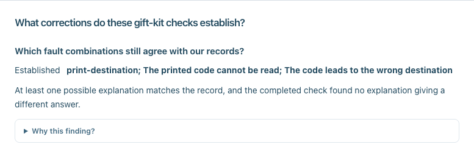
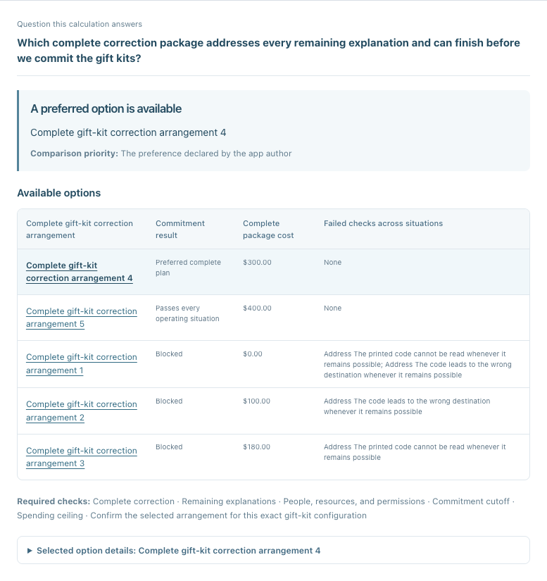
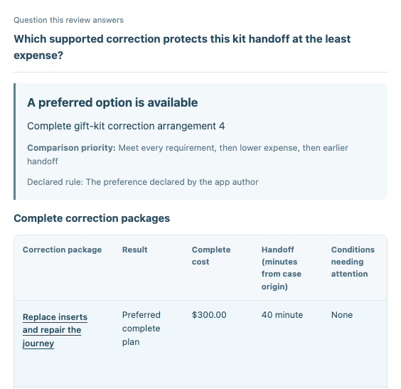
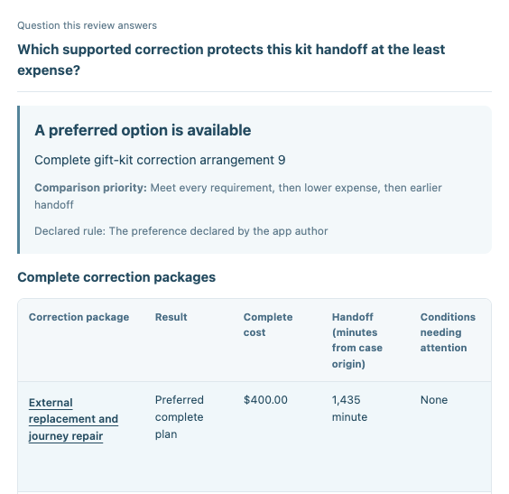
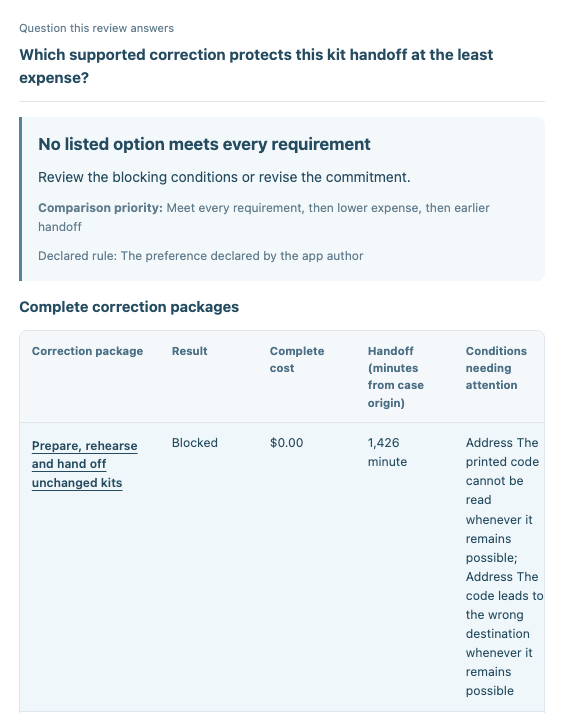
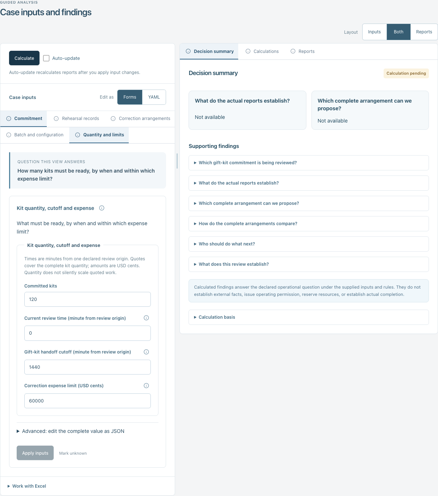
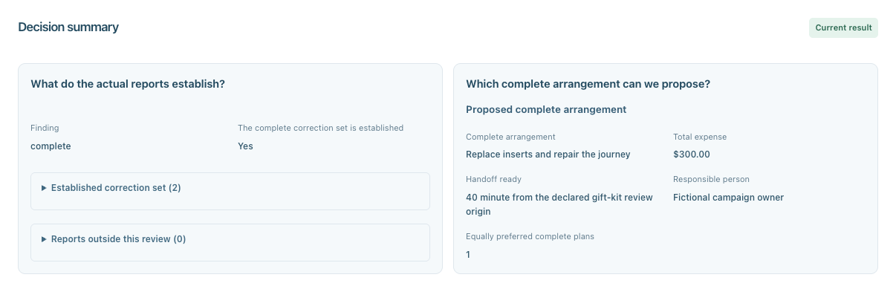
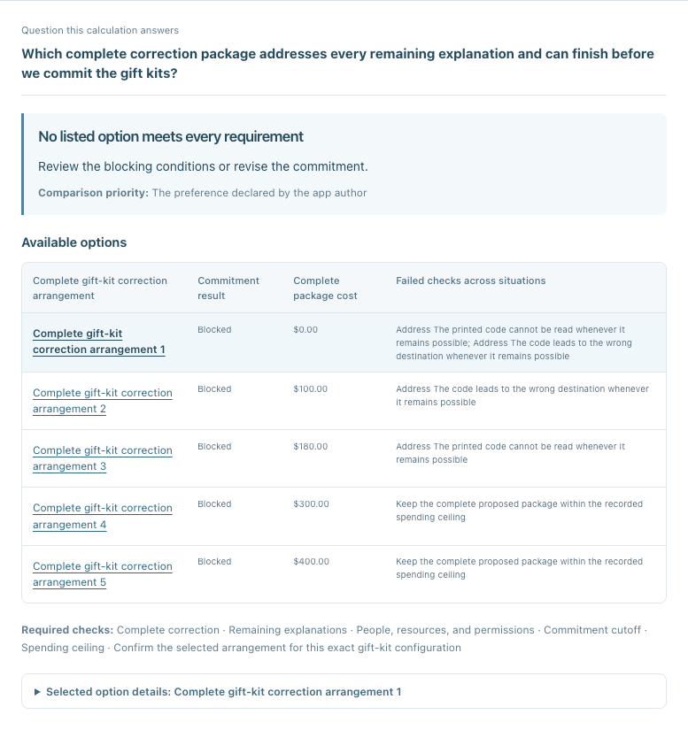

Leah has promised 120 usable gift kits by the end of a one-day preparation window. A failed scan and a wrong destination put that promise at risk. Marketing needs the recipient journey to work, production needs a complete correction it can carry out, and finance expects Leah to justify the expense within $600.
She could gather the records and compare quotes in a meeting or spreadsheet. Either approach must answer the same questions: what needs correcting, which complete response still fits, and what must the team verify after the work? A $100 reprint leaves one established fault unresolved. A $400 external package needs a reason for its premium and a genuine booking.
Leah uses the configured review to keep those questions connected. First it assesses what the supplied observations establish. Then it checks complete correction arrangements against those findings, the deadline, resources, records and spending boundary. The team can see why a recommendation follows before deciding to act.
Leah and the campaigns are fictional. The current calculation walkthrough uses a supplied one-day case; the paired operating views use separately authored campaign cases. Both plan ten minutes of rehearsal under a five-minute minimum. Their exact definitions and changed inputs are identified in Sources and scope. The earlier five-minute teaching tutorial is a separate supporting reference.

What do the records establish?
The recipient journey runs from decoding the printed code, through the intended destination, to completing checkout. Three supplied records examine different parts of that journey. They describe the same batch, insert and digital revisions, test phone and recipient account. A result for another configuration would need its own assessment.
| Check | Recorded result | What it tells Leah |
|---|---|---|
| Decode the printed code | Unreadable | The printed code cannot be decoded on the declared test phone. |
| Inspect the source artwork | Wrong destination | The approved source artwork contains the wrong destination. |
| Rehearse checkout | Usable | The intended account can complete the scoped checkout rehearsal. |
The evidence assessment examines the fault combinations compatible with those records. Its completed finding establishes both the printed-code and wrong-destination faults under the model. The successful checkout record leaves those faults in place. Leah therefore needs a correction that addresses both.


This finding concerns the supplied observations and configuration. People still establish the records’ authenticity and scope. A successful earlier checkout also leaves a fresh rehearsal of the corrected kits outstanding.
Which complete correction can meet the promise?
An arrangement combines a correction package with the people, resources, timing and permissions it requires under the rules and current context. The Arrangement Problem is whether those choices fit together. Each supplied quote covers 120 kits; planning must also include fresh rehearsal and handoff.
| Supplied correction | Expense | What planning finds |
|---|---|---|
| Keep the kits unchanged | $0 | Both faults remain. |
| Replace the printed inserts | $100 | The wrong destination remains. |
| Repair the digital journey | $180 | The unreadable printed code remains. |
| Internal replacement and journey repair | $300 | Addresses both faults; the planned complete sequence takes 40 minutes. |
| External replacement and journey repair | $400 | Addresses both faults; the planned complete sequence takes 25 minutes and needs a current booking. |
The commitment assessment checks each supplied complete arrangement against the recorded requirements. With a full day and a current external booking, both complete corrections pass. The agreed priority then prefers lower expense, with earlier handoff used to break a tie: Leah can put forward the $300 internal correction.


Hermod Labs authored the evidence and planning apps and the workflow connecting them. The first finding supplies the faults the second assessment must address. This is how assessment patterns compose around one business decision: evidence establishes the supported problem; planning establishes which complete response meets the modeled conditions. The review examines the five supplied packages; another quote needs to be added and assessed.
When does the extra $100 protect the deadline?
Shared basis. 120 usable kits by minute 1,440; a $600 limit; faults in both the printed code and destination. The same v3 app prefers lower expense among complete corrections that meet every requirement. Both scenarios plan ten minutes of fresh rehearsal.
What changes. Compare two campaigns with their own scoped diagnostic and booking records. Review begins at minute 0 in one and 1,410 in the other. Candidate starts follow that clock; the cutoff, quotes, capacity and recorded validity intervals stay fixed.
Ample window · GIFT-320
$300 in-house correction is preferred.
- Review time
- Minute 0: a full day remains
- Complete sequences
- In-house: 40 minutes; external: 25
- Supporting records
- Current campaign and insert-4 booking


Leah can put forward the cheaper complete correction. Both packages meet the deadline, so finance has no deadline-based reason to pay the extra $100.
Thirty minutes remain · GIFT-321
$400 external correction is preferred.
- Review time
- Minute 1,410 of 1,440
- Complete sequences
- In-house finishes 1,450; external 1,435
- Supporting records
- Current campaign and insert-4 booking


Leah can justify the $100 premium because the cheaper complete response misses the original cutoff. The external package still needs a genuine current booking.
What this means for the decision. The priority stays cost first. The available time determines whether the $300 package meets the promise and whether paying $400 protects it. Choosing and authorizing that work remain separate human actions.

With ample time, Leah can defend the $300 internal correction because it meets the requirements at lower expense. With thirty minutes left, that same 40-minute sequence finishes ten minutes late. Confirmed external work finishes five minutes before the cutoff. The cost-first policy now supports the extra $100 because it preserves a complete response to the original promise.
What stays fixed in this comparison?
These are matched operating scenarios with separate campaign identities, scoped source references and observation and booking-recording times. Candidate starts follow each review time. The 120-kit quantity, minute-1,440 deadline, $600 limit, package prices, cost-first app, availability and recorded validity intervals stay fixed. Both plan ten minutes of rehearsal. The comparison record lists every changed input. Advancing the clock never renews a permission or confirmation.
What if the faster package is not supported?
Shared basis. The same GIFT-321 case: 120 kits by minute 1,440, review at 1,410, a $600 limit, the same faults, quotes, starts, resources, permissions and v3 cost-first app. External complete correction costs $400 and would finish at 1,435.
What changes. Exactly one input field: the insert revision stated by the external booking is insert-4 in one calculation and insert-3 in the other. The campaign itself still uses insert-4.
Booking covers the current insert
$400 external correction is supported.
- Campaign insert
- insert-4
- Booking names
- insert-4
- Calculated handoff
- Minute 1,435, five minutes before cutoff
Leah can propose external work on this recorded basis, then obtain authorization and coordinate execution. The quote and correctly scoped booking support different parts of that proposal.
Booking covers the previous insert
No supplied complete correction passes.
- Campaign insert
- insert-4
- Booking names
- insert-3
- Remaining alternative
- In-house work finishes at 1,450: too late


Leah needs a genuine booking for the current configuration or an escalation. Rewriting the old confirmation to match the new insert would manufacture support.
What this means for the decision. The price and promised speed are unchanged. A source record that covers the actual work determines whether that response is available; a meaningful result can be “obtain support or escalate.”
Here the urgent campaign stays fixed and only the insert revision named by the booking changes. The old-insert booking supplies no confirmation for this campaign’s insert. The faster package fails that requirement while internal work still misses the deadline. Leah has no supported complete arrangement among the supplied options.
Her next action is to obtain a genuine current booking, seek another complete response or escalate the promise. Editing the old record to name the new insert would manufacture support. The planning finding gives production and finance a specific condition to resolve.
A shared reference: evidence, plan, actual handoff.
- Leah and the campaign teamEstablish the problem.Assess what the scoped observations support and carry the fault finding into planning.
- Production and financeCompare complete corrections.Check the full sequence and supporting records, then apply the agreed priority to arrangements that pass.
- Responsible ownersCorrect, rehearse and hand off.Authorize and perform the work, obtain a fresh result for the corrected journey and hand over the kits.
View the gift-kit business process

On a small screen, scroll sideways to follow the process.
Inspect the connected assessments in Decision Lab.
In Decision Lab, open Marketplace → Gifting operations, install or update the collection and choose Start analysis for Plan a gift-kit commitment · 2.1.0. The current workflow uses Calculate / Recalculate and a focused Decision summary. It calculates the evidence and dependent planning findings in order.
The screenshots below use this article’s supplied fictional one-day case. Its $600 boundary, 120-kit quantity, minute-1,440 deadline and ten planned rehearsal minutes reproduce the ample-time findings. The paired operating cases above retain their own definitions and records.
Open the supplied inputs and inspect each calculation
- Load the full case. In Inputs → YAML, paste the supplied case and choose Preview changes → Apply case changes. Its own resource, permission and booking intervals remain part of the input.
- Check the facts. Inputs → Forms groups Commitment, Rehearsal records and Correction arrangements. Choose Apply inputs after editing a form.
- Calculate. Choose Calculate at the top of Inputs. A missing or incomplete evidence result cannot supply a usable downstream fault finding.
- Inspect the answer. Decision summary proposes the $300 internal correction with handoff at minute 40. Calculations → Supporting calculations → Inspect result opens the evidence or planning comparison; Reports provides configured supporting views.


Switching Forms/YAML preserves drafts; input and report tabs remain independent. Work with Excel keeps workbook tools in a disclosure. The optional Auto-update recalculates after applied changes; Leah can leave it off and choose when to recalculate. Earlier saved reviews retain their embedded releases and review controls.


Separate calculation: what if only $200 is available?
A changed boundary needs a new finding.
Now finance reduces the available correction expense to $200. Keep the observations, quotes, timing, permissions and booking fixed. Leah edits Correction expense limit (USD cents) from 60,000 to 20,000 and chooses Apply inputs. The earlier planning result becomes stale; the summary withdraws its current proposal until she selects Recalculate.
Shared basis. Current Plan a gift-kit commitment workflow 2.1.0, 120 kits by minute 1,440, the same scoped observations, quotes, resources, permissions and current external booking. Both cases plan ten minutes of fresh rehearsal under the unchanged five-minute minimum.
What changes. Only the applied expense limit changes: $600 versus $200. Recalculate retains the unchanged evidence calculation and reassesses planning against the new boundary.
$600 available
$300 internal correction is preferred.
- Complete packages
- $300 internal; $400 external
- Handoff
- Internal at minute 40; external at 25
- Calculated basis
- Both established faults must be corrected
Leah can propose the cheaper complete response. Both packages meet the original deadline and recorded requirements.
$200 available
No supplied complete correction passes.
- Complete packages
- Both exceed the changed boundary
- Cheaper packages
- $100 and $180 leave a fault unresolved
- Calculated basis
- The same established faults and fixed rules


Leah needs another supported package, an appropriate change of spending authority or an escalation. Recalculation cannot turn a partial repair into a complete one.
What this means for the decision. A complete calculation can establish that no supplied arrangement fits. The changed spending boundary withdraws the earlier proposal without erasing its original calculation.
This is a useful answer even though it offers no correction to approve. The cheaper packages still leave an established fault unresolved; the complete packages exceed the new boundary. Leah needs a different supported quote, a changed spending authorization or an escalation. A completed calculation does not mean a feasible plan exists, and neither result authorizes work or establishes that a fresh rehearsal has passed.
These captures use the current local production preview. The calculation capture record retains the exact workflow, supplied inputs, native exports and runtime identity. The custom CLI and SDK stories retain a separately authored reviewed-mode workflow; installing the calculation release does not convert those examples or earlier saved reviews.
Leah can justify a response and its remaining work.
With ample time, Leah puts forward the $300 in-house complete correction. With thirty minutes left and a current booking, she puts forward the $400 external correction, finishing at minute 1,435. With the old-insert booking, she escalates the unsupported condition instead of presenting a quote as a workable plan.
Finance can see the deadline-based reason for the premium. Production can inspect the complete work and supporting records. Marketing can see how it protects the recipient journey. Responsible owners still choose and authorize the work, perform the correction, obtain a fresh rehearsal result and hand over the kits. A failed actual rehearsal reopens the question.
The CLI story repeats the connected assessments across campaigns; the SDK story continues one urgent case through correction and actual operating records. Those clients retain their own reviewed-mode execution contract. The separate authoring exercise makes ten rehearsal minutes mandatory; the current story plans ten under the unchanged five-minute minimum.
Explore the earlier priority comparison.
The retained teaching walkthrough compares cost-first and earliest-handoff priorities with five planned rehearsal minutes. Its $300/35-minute and $400/20-minute results belong to that release. They remain available alongside the original screenshots and authoring transition.
Links to the earlier tutorial sections
The calculation capture record retains the exact current workflow and supplied case. The operating comparison receipt and SDK view record identify the paired contexts separately. These findings establish modeled support for the supplied records; actual completion needs operating evidence.